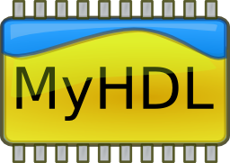

MyHDL, de Python al silicio

por Martín Gaitán
PyDay Córdoba 2011
Córdoba, 30 de abril de 2010
El desafío
- Gente que sabe de hardware pero no sabe Python (mis cumpas)
- Gente que sabe de Python (mucho!) pero no de hardware
- Yo, que no sé casi nada de nada
- En una charla de 30 minutos
A modo de intro: Dónde estamos?

Arduino > uControladores > microprocesadores...
- Funcionamiento y prestaciones predefinidas.
- Arduino: se programa sobre un uC que tiene un core.
- ASM es un lenguaje de "alto nivel"!
Pero... ¿cómo se diseña un micro?
- Con ustedes los HDL (Hardware Description Language)
- Electrónica digital a través software
- VHDL y Verilog son los más típicos
Software? No era hardware?
Hardware programable, FPGAs : Field Programmable Gates Array
El camaleón mamá, el camaleón, cambia de colores según la ocasión
—Chico Novarro
Originalmente sólo para prototipar.
- Ahora son baratos, se usan en producción!
>> escala, se fabrican chips ASIC (Application-specific integrated circuit)
- con (casi) el mismo HDL!
Y qué corno es MyHDL ?
- Es un framework HDL en Python
- Incluye tipos de datos, helpers, conversores y un simulador
- Permite unificar algoritmo, RTL y verificación en un mismo entorno!
- Convierte (con ciertas restricciones) a VHDL o Verilog (sintetizable)
- Permite cosimular Verilog
- Gratis
- Libre (LGPL)
Un multiplexor en VHDL: The hard way

library ieee ;
use ieee . std logic 1164 . all ;
entity mux is
port (
a, b : in std logic vector (3 downto 0);
s : in std logic ;
o : out std logic vector (3 downto 0));
end mux;
architecture behavior of mux is
begin behavior
o <= a when s = '0' else b;
end behavior
- Requiere declarar la "entidad" (entradas y salidas)
- Tipado estático: requiere declarar tipo de entradas
- Verbósico y no muy ortogonal
Myhdl's way
>>> "En IPython" # f12
- La entidad se determina por introspección (cuando se instancia)
- Python es dinámico ;-)
- Simple is better than complex!
Facherazo, pero explicalo
- "módulo" (bloque) de HW => función Python: mux
- En una función interna se define el comportamiento: logic
- Se decora con magia (@always_comb) y se vuelve un generador
- Los generadores guardan un estado interno
- Esto permite la simulación
- El decorador determina el tipo de sensibilidad. Predefinidos:
- @always_comb cuando cambie cualquier señal de entrada
- @always: cuando cambie las que le indiquemos
- @instance: generador adhoc (se usa en testbench)
Bueno, enchufemos!
Y cómo echufamos? Signal (a.k.a "cablecitos")
>>> bus = Signal(0) >>> bus.val 0 >>> bus.next = 1 >>>
Pero el HW tiene límites físicos ¿cuántos bits tiene ese bus?
>>> val = intbv(1, min=0, max=15) >>> len(val) 4 >>> bus = Signal(val)
Ahora sí, enchufemos!
- Hagamos un testbench
>>> codigo() #IPython
- y simulemos!
>>> !python ejemplo1.py #IPython
Pero se verifica con prints?
- Un print sofisticado: generar formas de onda (.vcd)
tb_4_sim = traceSignals(testBench)
sim = Simulation(tb_4_sim)
sim.run(20)
Veamoslo:
gtkwave testBench.vcd
Pero mejor es hacer test de verdad!
- unittest querido, el pueblo está contigo
>>> test() #Ipython
Convirtiendo pa'sintetizar
- A VHDL
mux_inst = toVHDL(mux, S, O, I0, I1)
- A Verilog
mux_inst = toVerilog(mux, S, O, I0, I1)
Conclusiones
MyHDL es una opción seria
- ... aunque su nombre indique lo contrario
Algoritmia, RTL, simulación y test: Python FTW!
La inferencia de patrones para conversion es pura magia
Unittests (y TDD) : diseño de hardware ágil y bien
Le debo mi última materia: hice un procesador MIPS en 3 semanas
La hora referí
- Gracias, y vamo' a comer